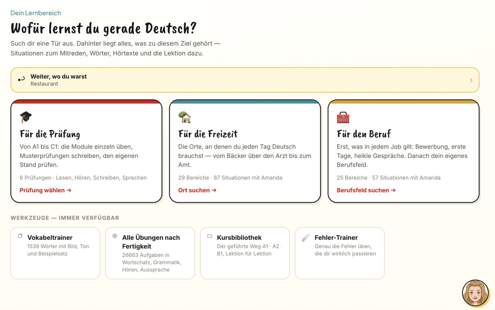
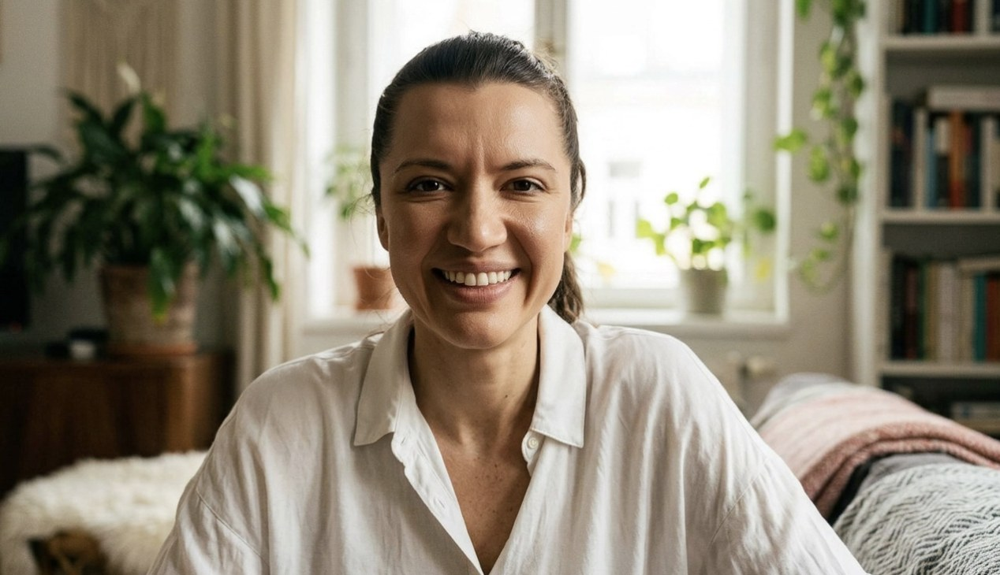
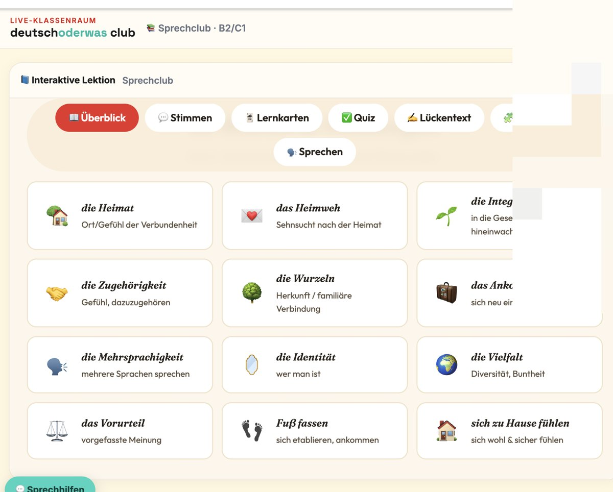
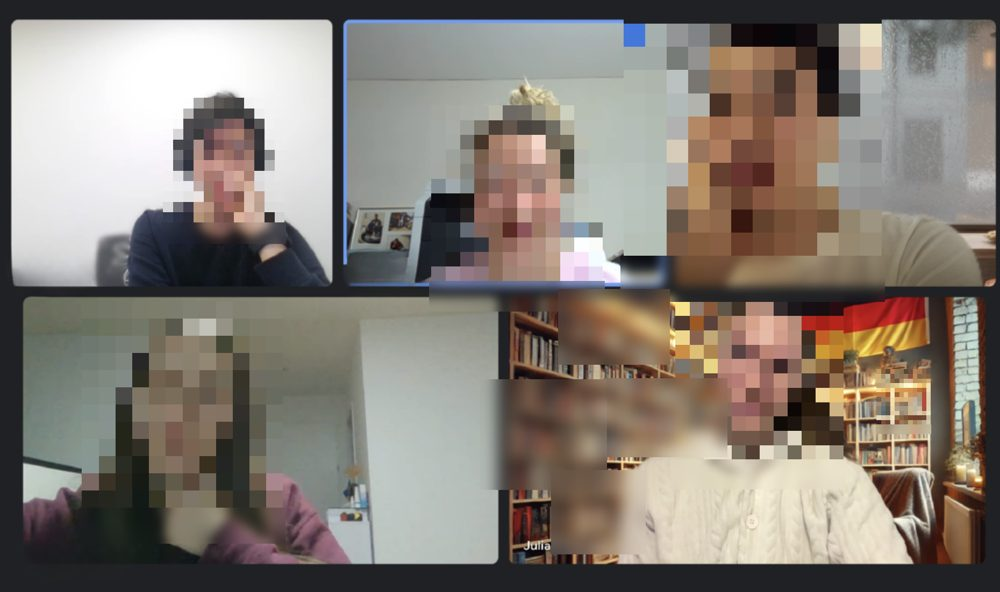
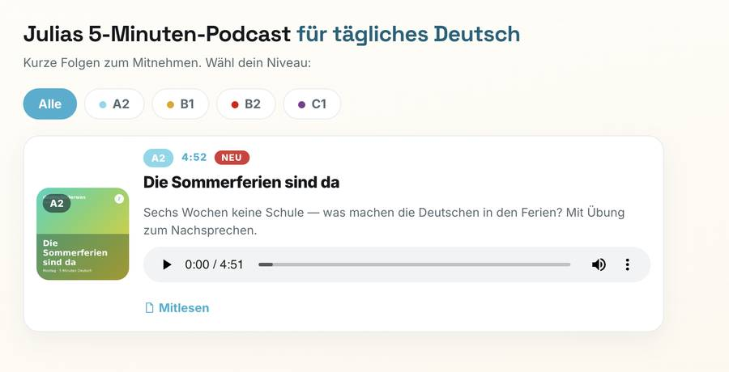
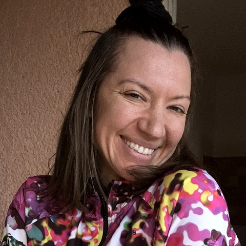
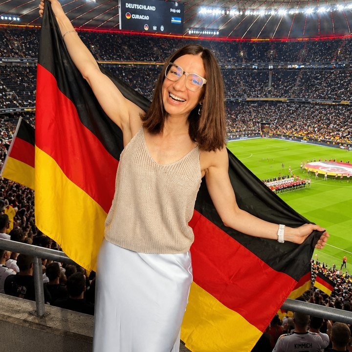
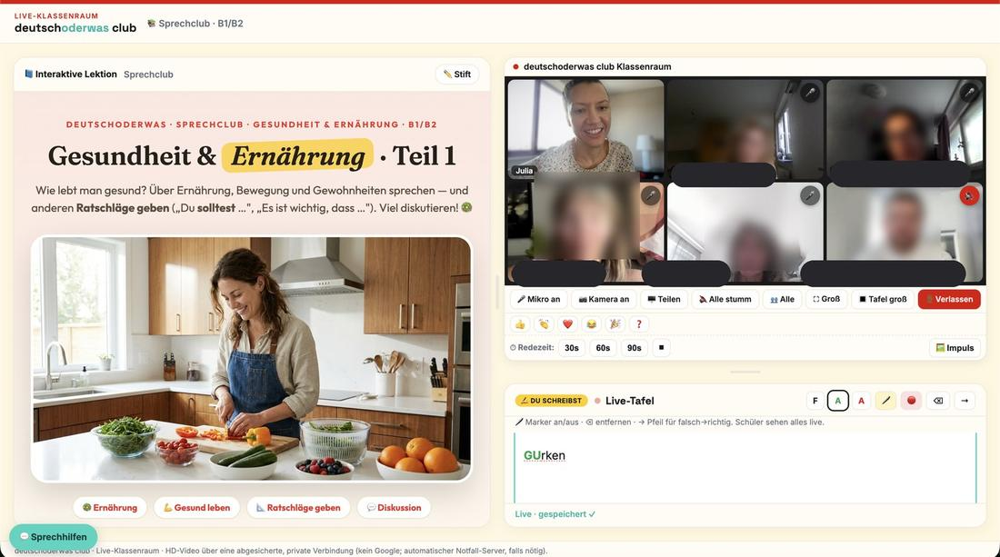
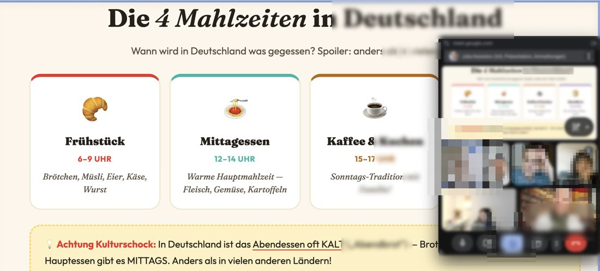
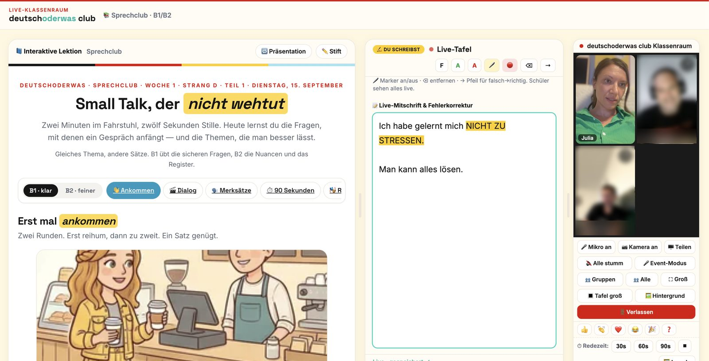

Kostenlose Materialien
Arbeitsblätter, Wortschatzlisten und der SOS-Alltag-Guide — zum Herunterladen, ohne Bedingungen.
Zu den Downloads →Ich bin Julia. Bei deutschoderwas findest du kostenlose Materialien, digitale Kurse von A1 bis C1, einen täglichen Sprechclub mit echten Menschen und einen Podcast für jeden Tag.

Du musst nicht alles nehmen. Fang mit dem an, was gerade in dein Leben passt.

Arbeitsblätter, Wortschatzlisten und der SOS-Alltag-Guide — zum Herunterladen, ohne Bedingungen.
Zu den Downloads →
In deinem Tempo, wann du willst. Mit Übungen, Fortschritt und einem Zertifikat am Ende.
Kurse ansehen →
Jeden Tag live sprechen, in kleinen Gruppen, mit einer Lehrkraft, die dabei ist und hilft.
Zum Club →



Ich unterrichte Deutsch als Zweitsprache — und ich kenne den Moment, in dem jemand alles versteht und trotzdem kein Wort herausbringt.
Hier kommt dein Text hin: woher du kommst, wie du zum Unterrichten gekommen bist, was dich an deinen Lernenden antreibt, seit wann es deutschoderwas gibt. Schick mir ein paar Stichpunkte, dann schreibe ich daraus zwei bis drei Absätze in deiner Stimme — du liest gegen, bevor etwas live geht.
Die drei Bilder hier sind aus dem Bestand genommen. Sag mir, welche Fotos von dir auf diese Seite sollen — gern auch neue.
Material, das du sofort benutzen kannst — im Alltag, beim Amt, im Gespräch.
Die Sätze, die du brauchst, wenn es ernst wird: beim Arzt, beim Amt, am Telefon. Als PDF zum Ausdrucken.
Herunterladen →In wenigen Minuten weißt du, wo du stehst — nach dem Prinzip von Goethe und telc, mit echten Audios.
Test starten →Jeden Tag eine Folge für A2 bis C1, mit Text zum Mitlesen. Kostenlos, ohne Werbung.
Reinhören →Welche kostenlosen Materialien sollen hier noch stehen? Ich kenne bisher nur SOS Alltag.
Jeder Kurs besteht aus Modulen und Lektionen mit Übungen. Du siehst immer, wo du stehst, und bekommst am Ende ein Zertifikat.

Von „ich verstehe alles, aber beim Amt bekomme ich kein Wort raus" zu „ich regle meinen deutschen Alltag selbst". Termin beim Amt, Beschwerden beim Arzt, Wohnungsbesichtigung, Reklamation, Telefonieren, Widersprechen.
Sag mir, welche Kurse es schon gibt oder als Nächstes kommen — dann stehen sie hier.
Du hast Bücher erwähnt. Ich weiß noch nicht, welche — Titel, Cover und wo man sie kauft, dann baue ich den Abschnitt.
„Alltag & Integration" steht in der Datenbank auf 0 Cent, ist also für alle gratis. Du wolltest, dass Kurse über unsere eigene Plattform verkauft werden — dafür braucht es einen Preis und die öffentliche Kursseite aus dem Kurskonzept (Schritt 6). Bis dahin verlinkt der Knopf auf die Preisseite des Clubs.
Kurse hast du genug gemacht — gesprochen hast du zu wenig. Im Sprechclub redest du täglich mit echten Menschen, in kleinen Gruppen, und eine Lehrkraft kommt dazu und hilft.

Podcast, Instagram und YouTube
Kurze Folgen, kleine Lektionen, Blicke hinter die Kulissen.
Instagram
Zum Profil →YouTube
Zum Kanal →Du wolltest echte Feeds, keine Handauswahl. Dafür braucht die Seite einen Zugang zu Instagram und YouTube. Die Kacheln oben sind der Platz dafür — sie füllen sich, sobald der Zugang steht. Was ich dafür brauche, steht unten in meiner Nachricht; die Schlüssel selbst trägst du ein, die fasse ich nicht an.